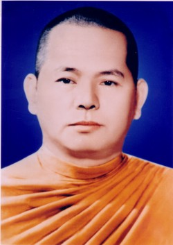

BuddhaSasana
Home Page
This document is written in Vietnamese, with Unicode
Times font
|
 Hòa thượng Giới Nghiêm có thế danh là Nguyễn Ðình Trấn, sinh ngày 5 tháng 5 năm 1921, tại làng Gia Lê Thượng, xã Thủy Phương, huyện Hương Phú, tỉnh Thừa Thiên - Huế. Ngài xuất thân trong một gia đình gồm ba anh em, có truyền thống đạo đức lâu đời. Ông nội là bậc xuất gia, cha là Hòa thượng Quang Diệu, chú cũng xuất gia, bác là Hòa thượng Phước Duyên. Năm 9 tuổi (1930), Ngài xuất gia tại chùa Bãng Lãng - Huế thuộc hệ phái Bắc truyền. Sau đó Ngài được thọ giới Sa Di. Ðến năm 19 tuổi (1940 - Canh Thìn), Ngài thọ giới Tỳ Kheo tại Ðại giới đàn chùa Phổ Ðà - Ðà Nẵng. Trong thời gian này, Phật giáo Nam Tông bắt đầu du nhập vào Việt Nam. Nhờ vậy Ngài có dịp nghiên cứu giáo lý Nguyên Thủy. Năm 1944, Ngài được sang tu học tại Phnômphênh - Campuchia. Năm 1947 Hoà thượng Niếp Tích truyền giới Tỳ Kheo theo truyền thống Nam Tông - Theràvada cho Ngài. Ngài được học đạo với Ðức vua sãi Campuchia, Hòa thượng Chuon Nath. Sau đó Ngài sang du học ở Thái Lan và Miến Ðiện. Tại Miến Ðiện, Ngài được học thiền tứ niệm xứ với ngài Thiền sư Mahàsi Sayàdaw. Sau hơn mười năm du học nước ngoài, Ngài trở về Việt Nam để hoằng khai Phật Giáo Nguyên Thủy. Năm 1957, Ngài cùng các vị Trưởng lão Hòa thượng Hộ Tông, Bửu Chơn, Thiện Luật, Tối Thắng, Giác Quang, Kim Quang, Pháp sư Thông Kham vận động thành lập Giáo Hội Tăng Già Nguyên Thủy Việt Nam. Khi Giáo Hội Tăng Già Nguyên Thủy Việt Nam chính thức thành lập, Ngài được đề cử giữ chức vụ Phó Tổng thư ký. Khi chính quyền Ngô Ðình Diệm sụp đổ, Ngài đuợc bầu làm Tăng Thống trong bốn nhiệm kỳ từ năm 1964-1971. Năm 1979, Ngài được tái cử chức Tăng Thống Giáo Hội Tăng Già Nguyên Thủy Việt Nam. Cũng trong năm 1979, Ngài được thỉnh tham gia giáo đoàn chư Tăng Phật Giáo Nguyên Thủy Việt Nam đi Campuchia để làm thầy tế độ, tái truyền giới cho các sư sãi đã bị Khmer đỏ bắt hoàn tục. Từ đó Phật Giáo Campuchia đã được phục hồi vững mạnh và thắt chặt tình đoàn kết Việt Nam - Campuchia. Trong cuộc đời hoằng hóa hành đạo, Ngài đã tham dự nhiều hội nghị quốc tế về Phật Giáo, đặt biệt là tham dự hội nghị kết tập Tam Tạng lần thứ 6 tại Rangoon, Miến Ðiện. Về sự nghiệp giáo dục đào tạo Tăng lữ, Ngài đã mở một Phật học viện sơ cấp tại chùa Tam Bảo - Ðà Nẵng và một Phật học viện Trung Ðẳng tại chùa Phật Bảo tại quận Tân Bình - Sài Gòn, nơi Ngài làm viện chủ và tiến sĩ Thiện Giới làm Giám Ðốc. Phật học viện đào tạo nhiều Tăng tài cho hệ phái Nam Tông. Sau khi học thiền tứ niệm xứ ở Miến Ðiện, trở về nước, Ngài mở trung tâm thiền tứ niệm xứ tại Tam Bảo Tự, núi Lớn - Vũng Tàu, đào tạo nhiều hành giả thiền sinh thâu đạt kết quả pháp hành tốt đẹp. Sau năm 1975, Ngài tiếp tục mở nhiều khóa thiền tại chùa Phật Bảo nơi Ngài trụ trì. Về sự nghiệp sáng tác dịch thuật, Ngài đã dịch và cho in các tác phẩm sau đây :
Ngoài ra, còn một số kinh Ngài đang dịch dở dang, hoặc còn trong bản thảo hiện lưu giữ tại chùa Phật Bảo. Về sự nghiệp xây dựng chùa chiền, từ miền Nam ra miền Trung, lên Cao Nguyên, ở đâu cũng có dấu chân Ngài bước đến để hoằng khai đạo mầu. Ngài đã kiến lập các tự viện như chùa Ðịnh Quang (ở làng Gia Lệ, Huế), Tăng Quang (Huế), Tam Bảo (Ðà Nẵng), Nam Quang (Hội An), Tăng Bảo (Quảng Ngãi), Bửu Sơn, Pháp Luân (Ðà Lạt), Pháp Bảo (Mỹ Tho), Bình Long (Phan Thiết), Phước Sơn (Ðồng Nai), Tam Bảo Thiền Viện (Bà Rịa - Vũng Tàu) và Phật Bảo (quận Tân Bình, Sài Gòn). Hòa thượng Giới Nghiêm có số đồ chúng xuất gia đông đảo nhất trong Phật Giáo Nam Tông Việt Nam, một số hiện còn đang du học nước ngoài. Hiện nay, những đệ tử trưởng thành của Ngài là Hòa Thượng Hộ Nhẫn ở Huế, Hòa thượng Pháp Tri, Tỳ kheo Viên Minh, Tỳ kheo Tâm Hỷ, Tỳ kheo Hộ Chơn, v.v.... Năm 1984, Ngài lâm trọng bệnh, sức khỏe kém dần và không hồi phục lại được. Ngài đã thâu thần thị tịch lúc 10 giờ 10 phút ngày 13 tháng 7 năm Giáp Tý, tức 09 tháng 8 năm 1984, tại chùa Phật Bảo, hưởng thọ 63 tuổi, với hơn 50 năm dốc lòng hoằng đạo. Hằng năm, vào mùa Vu Lan Báo Hiếu (13/7 â.l.) toàn thể tăng tín đồ Phật Giáo Nam Tông và Giáo Hội Phật Giáo Việt Nam làm lễ tưởng niệm Hòa thượng, một thiền sư, một bậc Thầy từ hòa khả kính, đức độ cao thâm, một vị giáo phẩm tôn túc của Phật Giáo Việt Nam. Tham Khảo: "Danh Tăng Việt Nam", Tập I, Thích Ðồng Bổn Chủ biên, Thành Hội Phật Giáo xuất bản, Sài Gòn, 1997. -ooOoo- |
last updated: 02-02-2004